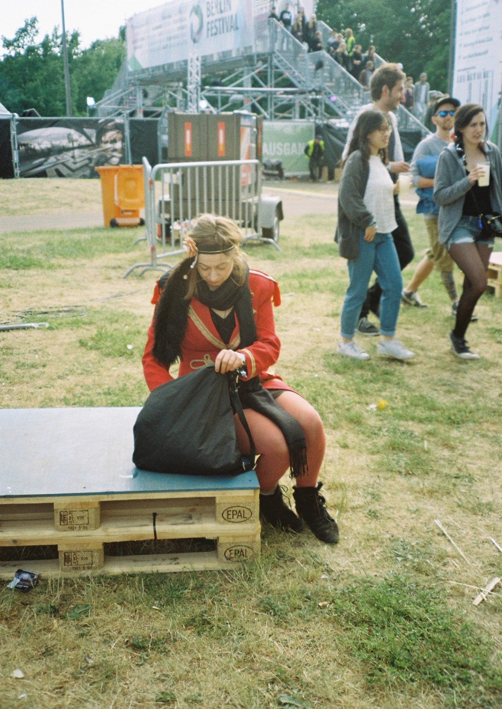
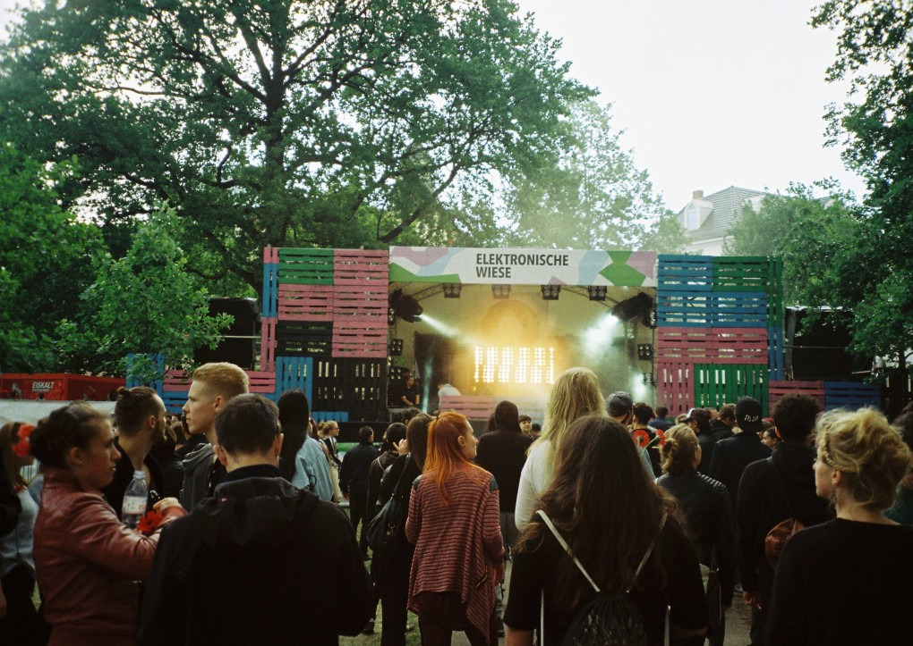
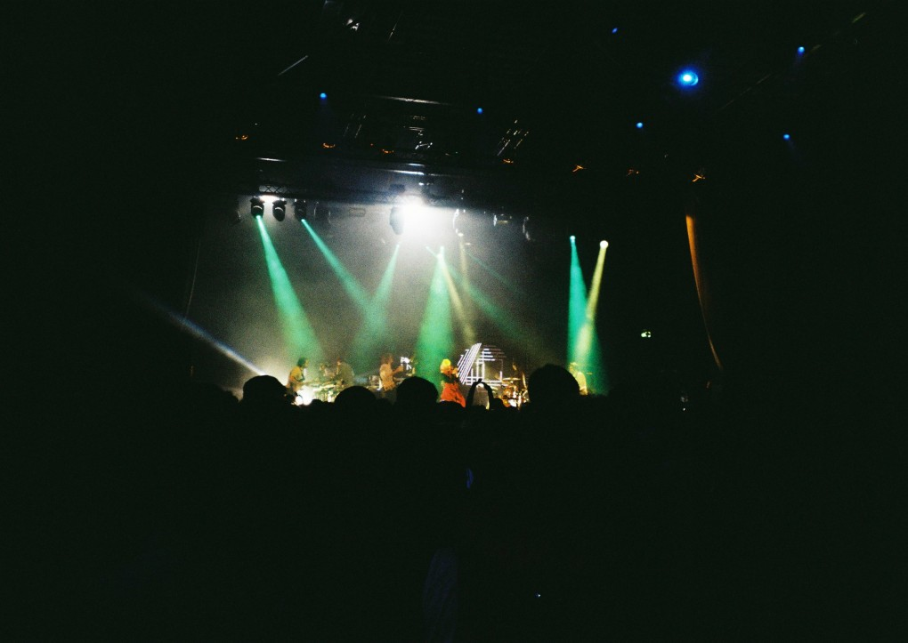

Review: Berlin Festival 2015
{kind=link}

Berlin Festival was a strange beast in its previous incarnation at Tempelhof Airport. Choosing such a name like that for your festival implies it’s tapping into the cultural essence of the city in question. However, with marquee rock headliners like Blur, The Killers and Franz Ferdinand, it felt more like an attempt to recreate beloved festival experiences like Glastonbury and Roskilde. Except, it never really worked in Berlin. And as cool as an abandoned airport sounds as a venue, in reality Tempelhof Airport felt cavernous and lacking in identity.
The organisers must have felt the same way. Last year it was announced at the 11th hour Berlin Festival would be switching to the Arena complex in Kreuzberg, one of the best spaces the city has to offer, and a lot more representative of the Berlin experience. While the event last September had a few teething problems, the possibilities of the venue were really used to full effect this year. Combine it with an inspired date move to the start of summer (as opposed to the end of it), and a cleverly curated line-up that combined a heavy hitting cast of DJs with a posse of crossover live acts, the name ‘Berlin Festival’ felt more befitting in 2015.
Friday night represents a low-key and relaxed start to the weekend, the open-air spots not yet in operation, though with an assortment of clubbing options available across the venue. Iceland veterans GusGus play an early set in the mainroom full of rich, trancey melodies and their trademark enigmatic vocals; the perfect crossover live act for the reborn Berlin Festival. Marek Hemmann follows on a more straightforward melodic tech house tip, and he’s a favourite with the crowd, dropping in with the kind of driving, uplifting energy that suits the timeslot perfectly.
Ten Walls is the headliner for the evening; merely a week before the bizarre and bigoted social networking outburst that brought his career to a grinding halt. Berlin Festival will likely be one of his last performances for quite some time, so it’s oddly conflicting to report to report how much the Lithuanian producer had nailed a stadium-powered sound prior to self-destructing, simmering with an hour of unreleased material before a payoff of anthems towards the end. Seth Troxler’s set winds down the energy nicely afterwards with some particularly dark and tribal techno.
{kind=link}

Saturday is the most sprawling and epic day of the weekend, with a huge throng descending on the venue and a fevered energy building in the evening. Watergate Club hosts the Badeschiff stage this afternoon, and they’re appropriate curators for the stage’s subdued and sunny vibes, with a host of Berlin stalwarts like Tiefschwarz, Ellen Allien and Pan-Pot playing until close at 10pm. Richie Hawtin is taking control of the grassy ‘Elektronische Wiese’ open air on the other side of the venue, alongside a capable cast of Minus cohorts like Fabio Florido and Marc Houle. You might know exactly what to expect from Hawtin by now, but the energy of the stage is friendly, relaxed and energetic; just as it is across the complex for most of the weekend, with Berlin Festival boasting an enviably down-to-earth audience for such a big event.
Meanwhile, by the time Innervisions indie-dance diversion The Howling hits the mainstage, the energy is really beginning building throughout the complex. Chet Faker injects some real emotion and soul into the evening, while James Blake delivers what amounts to a hit of opium for everyone involved as he flattens things right out. It’s Fritz Kalkbrenner who unleashes the euphoria after midnight, and it’s a powerful, melodic and soulful peak for the festival.
{kind=link}

me and Dixon take the mainroom home on Saturday night, and how strange that they’ve become the Berlin equivalents of a trance mainstage headliner. As they’ve grown to play such sprawlingly huge crowds like the one before them tonight, they’ve adapted in style towards a dramatic sound that fills the space without zero artistic compromise; certainly no easy feat. For those seeking more intimate vibes, Chopstick & JonJon and Tender Games keep things rocking well into the evening.
Sunday is the most relaxed of all three days, with a noticeably older crowd. Robert Hood’s cancellation at Badeschiff means Carl Craig is given four hours to do his thing, which he uses to full effect by throwing in all manner of dub, reggae and downbeat alongside the typical house and techno selections. Tale of Us bring the open-air adventures to a close with some extremely trancey melodic techno, while Underworld offer a suitably emotional ending to the three days, the nostalgia genuinely resonating in a very powerful way.
With a line-up that was decidedly more electronic this year, there was some excellent musical programming on display at Berlin Festival. The only critique you could level is that it was lacking some of the city’s underground credentials; that it’s still not ‘Berlin enough’. However, there’s space for such a large-scale festival in the inner city, particularly when there’s been other less successful attempts in the past. Berlin Festival reborn is set to become a genuine fixture.